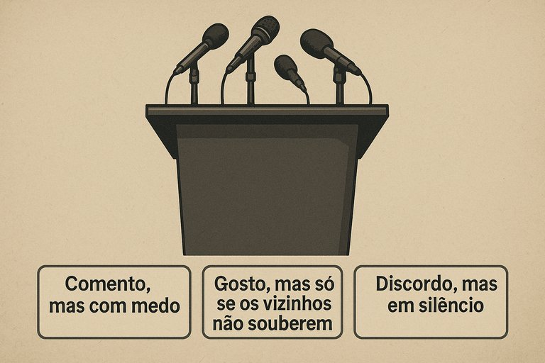

Publicado em 2025-07-07 12:17:14
Vivemos num país onde, a cada esquina digital, há indignação.
Toda a gente está “farta disto”, “cansada da política”, “enojada com os tachos”.
Mas quando se lhes oferece um espaço livre, aberto, inteligente — como este blogue — para ler, pensar e… comentar?
Silêncio. Abismo. Vazio cósmico.
Publicamos ideias.
Publicamos crónicas, sátiras, análises, pensamentos que rasgam as trevas como um relâmpago num céu podre.
E o que recebemos?
Zero comentários. Zero interações. Zero sinais de vida.
Não é que o artigo seja mau. Os estrangeiros comentam, elogiam, debatem.
Tivemos mensagens da Suécia, da Holanda, do Brasil, até dos EUA —
a dizer “parabéns pelo conteúdo”, “gostei do estilo”, “grande crítica social”.
Mas do povo português… nem um “bom dia”.
É como gritar num poço onde os sapos têm medo de ecoar.
Porque comentar é arriscado:
E num país onde a regra de ouro é “não te metas”, até um “gostei do artigo” pode ser visto como uma tomada de posição política.
Resultado?
Milhares a ler, dezenas a partilhar… mas ninguém com coragem para escrever uma linha.
Talvez estejam à espera que a RTP diga que o blogue é respeitável.
Ou que o presidente da junta partilhe um link para ser socialmente seguro dizer:
“Sim, li aquilo. Muito bom.”
Mas enquanto não vem o selo azul da opinião oficial, preferem calar-se.
Não vá alguém desconfiar que pensam por conta própria.
Portugueses: os tempos não pedem silêncio — pedem ruído lúcido.
Comentem. Discordem. Aplaudam ou critiquem. Mas falem.
Porque quem se cala... consente.
E quem consente, enterra-se com os corruptos — de boca fechada e alma esquecida.
Francisco Gonçalves
Ainda com esperança de que um português diga: “gostei.” ou " não gostei ou discordo porque ....."
Lê com atenção. Pensa com clareza. Partilha com coragem. Escreve com alma.
Mas nunca, nunca cales a vergonha que este país te impõe como se fosse normal.